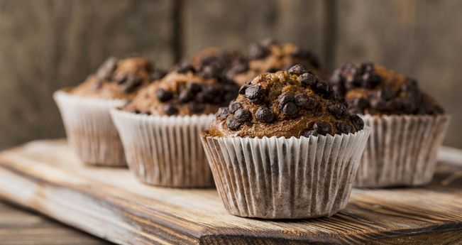

Сьогодення Гончар Анастасії Романівни
На головну
Мій типовий список покупок
Молочні продукти
- Молоко
- Сметана
- Масло
Солодощі
- Печиво
- Шоколад
- Йогурт
Гігієна
- Зубна паста
- Крем
- Мило
Мій улюблений десерт - це мафін
Ось рецепт тіста:

- Розігрійте духовку до 180°С. Вистеліть в форму для запікання мафінів паперові формочки або злегка змастіть вершковим маслом форми для мафінів. Рекомендуємо купити багаторазову металеву форму на 12 мафінів та силіконові формочки. Паперові форми теж підійдуть, але враховуйте, що вони одноразові.
- У невеликій мисці змішайте разом сухі інгредієнти: просіяне борошно, цукор, розпушувач, мускатний горіх і дрібку солі.
- У середню миску додайте вологі інгредієнти: молоко, вершкове масло, свіжі яйця ЯСЕНСВІТ. Інтенсивно перемішайте за допомогою вінчика чи міксеру, поки добре не з’єднаються. Яйця і молоко повинні бути кімнатної температури. Дістаньте їх з холодильника за 30 хвилин, перш ніж почати готувати мафіни. Краще використовувати розтоплене масло, яке вже охололо. Важливо дати йому охолонути, щоб воно не збивало яйця, коли ви їх змішуєте.
Як запікати:
- Додайте борошняну суміш і перемішайте силіконовою лопаткою до однорідності.
- Насипте в готове тісто свіжі чорниці (також підійдуть і заморожені ягоди). В класичному американському рецепті мафінів додають зазвичай саме чорницю. Також можна урізноманітнити мафіни, та додати до тіста нарізані яблука, полуницю або малину. Шоколад, родзинки чи горіхи зроблять маффіни більш насиченими, а прянощі, такі як кориця, імбир, чи мускатний горіх нададуть їм додаткового смаку та аромату.
- Рівномірно розподіліть тісто між формочками для мафінів, заповнюючи 2/3 об'єму.
- Випікайте 20-25 хвилин або доки зубочистка, вставлена в тісто, не вийде лише з кількома вологими крихтами.
- Перекладіть мафіни на решітку до повного охолодження. Для краси посипте зверху цукровою пудрою або горіхами. Мафіни найкращі в день їх приготування, але їх можна зберігати для подальшого використання.